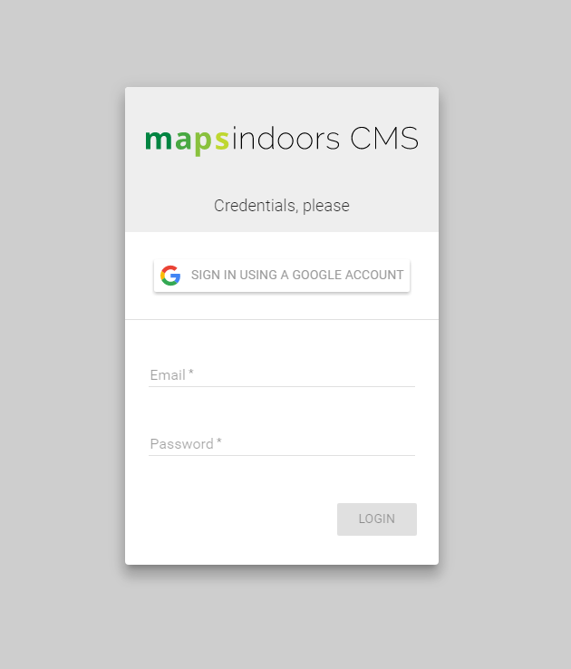

Guide to the MapsIndoors CMS
Working with Locations
There are 3 different roles in the system:
Editor - Editors can create new locations, make changes to and remove existing locations
Publisher – Publishers have editor rights and can publish those changes to the live site
Admin – Administrators have editor and publishing rights and have access to icon settings, push, and users
Logging In
Login by visiting cms.mapsindoors.com
Log in using your email address and the provided password.

The Map
After logging in, the map will appear.

There are a number of key elements on the map:
Menu Bar: The Menu bar changes depending on who is logged in and what role they have. As an Editor or Publisher there is:
Map: See above
[List](#heading=h.2s8eyo1): A list of locations in the currently selected Venue
About: information about current version, MapsPeople and copyright notices.
Feedback: Here you can give feedback to the developers if you find a bug or have suggestions on how to improve the system.
Venues: Venues reflect different areas of the University. Each venue may contain multiple points of interest such as University buildings.
**Building selection: **Drop down menus showing buildings that are part of the selected Venue. Selecting a Building is important before adding a POI related to that building - as it otherwise would be set as a outdoor POI or related to the incorrect building.
Icon & category filter: Drop down menus, used to filter what is displayed on the map with in the CMS - a specific set of locations filtered by their icon or category type.
Search: Search for a location
Account: Click here to logout or change the password.
Floor selector: The floor selector shows the floors available, click on the desired floor to switch floor.
Buildings: The buildings listed in the specified venue are shown on the map.
Creating a Location
To create a new location, first make it clear if this is a outdoor POI or placed inside inside a Building. If inside a Building, select the desired building from the drop down menu. Now click on the place on the map where it should be added. Select “Create new Location here”. The placement doesn’t have to be 100% precise, it can be moved afterwards.

After clicking on the box, you will be asked to select an Icon that will represent the new location.

Select the icon for the location that you wish to edit and then select Create
Edit Location Form
Select the icon for the location that you wish to edit
and the Edit Location Form will appear.
In the Edit Location Form you can:
Icon Settings: Change the Icon associated with the location
Floor & Categories: Set/change which floor the location is on and/or what category it belongs to.
Translations:
Name: Set/change the name of the location. This is shown when the location is selected in the app.
Alias: Add alternative search phrases, for example a restaurant might have aliases of café, dinner, food, lunch etc. Insert a comma between each phrase. By double clicking on the text, you are able to edit the alias and the ‘X’ at the end will delete that particular alias.
Description: Provide a description of the location.
**More: **You can add more fields to your location. Please read the coming section for more information.
Scheduled display: If required, select a time period during which the location will be visible, leave empty if it should always be shown.
Save changes
Remember to save before clicking on another location or changing the page, otherwise your changes will be lost. To save the changes, press “Save”-button in the top of the location edit form. Note: Saving changes does not publish them on the map, for that you need to press the publish button
Fields
Under the section of ‘More’, it’s possible to add new fields. Click on the ‘Add Fields’ and a drop down menu will appear. Currently you can choose between phone, website-url and email. Note: For website-urls, please provide secure (https) urls to ensure that all end user links work properly.
When you add a new field, they are added below the description - please see the images below.
In the first image we have a standard setup, where in the second a field for a phonenumber was added
This can be useful for e.g. offices or shops where their email or phonenumber needs to visible within the app.
List
To view a list of all locations in a certain venue, select ‘List’
To sort the data, click on the column title.
To edit a location, click the pencil (right hand column, highlighted red above)
To edit multiple locations, tick each one (left hand column, highlighted blue above)
Once a location/locations are selected, the following options appear (highlighted red below):

When selecting one a more locations using the checkboxes, the options indicated by the red square above will appear.
**Manage **opens a menu (picture to the left), with the same parameters as seen in “Edit Location” but this enables changes to all the selected locations instead of one.
Publish publishes the data (only those with Publisher or Admin access).
Copy will make a copy of the selected locations.
Delete deletes all the selected locations (a prompt will open to ensure a delete is required)
Publishing
Map
If a location is selected or a new one is created on the map this menu appears (image on the right).
Select ‘Publish’ to ensure that the location is visible on the live map for all to see.
Select ‘Delete’ to remove the location.
List
Under list it is possible to publish changes and delete locations. This can be done for individual locations or multiple locations.
If sorted by the “Last Modified” column, the new changes will be listed at the top - and unpublished changes will be marked with this small icon  , (see image below)
, (see image below)

Admin
Admin allows access to the following sections:
Icon Settings
Push
Users
Icon Settings
Use these settings to control how Icons are shown on the map, and what additional information is shown with it. *More information about Icon*s
**Name *(Red square)*: The name of the Icon
**Icon *(Orange square)*: Selecting the Icon, which is do with a https link
**ZoomLevel *(Green square)*: How much should people zoom in to see the Icon.
**Label *(Blue square)*: It’s possible to show a label next to the Icon. Either
Location Name
Room ID & Location Name
Location Name & Room ID

Press SAVE, in order to store and publish changes.
Push
It’s also possible to send out Push Notifications to the users of the map on native platforms, Android and iOS. This needs to be configured when developing a new native app.
To setup a Push Notification, first “Create New Message” (Blue square), then the following parameters needs to filled:
**Title *(Pink square)*: The headline of the message
**Content *(Orange square)*: The content of the message
**Push Settings *(Green square)*: Do you need to be in a specific location to receive the message? More on this later.
**Active *(Red square)*: When should the push messages be available, set a start date and end date.

If you click the Manage Push (green square above), this menu will open.
Here it’s possible to control how many times and how often the messages should be received by a unique user.
Where it’s received, either by beacon (if that’s available) or from GPS location.
Users
Allows Admins, to control who has access and what roles they have (Blue square), or create new users (Red Square).

When changing access to an already existing user, the menu to the left will open.
Here it’s possible to see:
Roles: What role(s) the user has been granted.
Content Access: What Content is available. The Content refers to the project in question, where a client might have multiple available - but the various CMS users should maybe only have access to a few.
When creating a new user provide the following information:
Email: The user’s email address, this is used as a username
Password: The password for the user, this can be changed by the user
User Roles: What role(s) should be granted.
Content Access: Which Content should be accessible.
Known limitations
It is currently not possible through the CMS to upload new icons for locations. This is done outside the system.
Changing the Icon in the App, top left corner. (*See picture) *is currently done outside the system.
Glossary
Icons: cons are used for various Locations on the map, e.g. POI, Rooms. Having a unified representation for specific types of locations makes the system easier for users to engage with .
Https: This is needed for security and safety reasons.
Live: When data is available for the public users of the map.
Location: A term used in the system for all Rooms and POI
POI: “Point of interest” - is usually an object that isn’t tied to a room. E.g. Vending Machine, Locker, A Statue, ATM etc.
RoomID: The number for the Room, more information can be found in the Datasheet
RoomType: This comes from the Datasheet that is provided, and determines what type of Room it is. E.g. Lecture Hall, Cafe, Office, Stairwell etc.